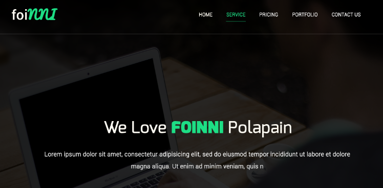
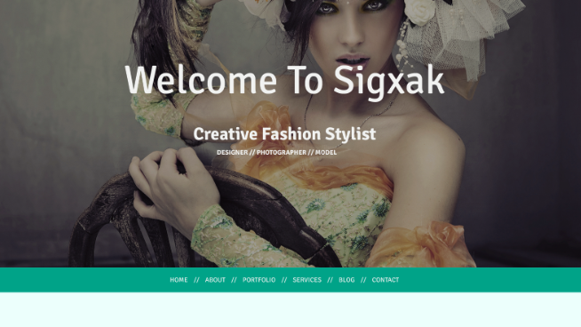

Григорий Андрианов
esquelroche@hotmail.com
Образование
Казанский Федеральный универститет
Институт Фундаментальной Медицины и Биологии
Кафедра физиологии и ботаники растений
2010-2015
Студент
Кафедра биохимии и биотехнологии
2015-2019
Аспирант
Навыки
Среднее владение Python
Среднее владение HTML, CSS
Pre-intermediate английский
Портфолио


Ключевые особенности
Быстрая обучаемость
Отвественность
Нацеленность на результат
Работа в команде
Сертификаты
Python
Linux
Хочу получить в ходе работы навыки:
Профессиональный подход к верстке (например, БЭМ).
Кросс-браузерная верстка
Адаптивная верстка
Активное использование JS для повышения интерактивности страницы
Опыт работы
2013 - 2014
В рамках двух курсовых работ разрабатывал автоматическую систему классификации текстов по ботаническим категориям на языке программирования Python.
2015 - 2016
Участвовал в разработке нового стастического метода обнаружения мутаций, которые приводят к возникновению рака почек.
2016 - по настоящее время
Исследование физического влияния новых лекарственных соединений, получаемых из растений, на рак поджелудочной железы
2016 - по настоящее время
Дежурный системный администратор в дата-центре "STACK24"